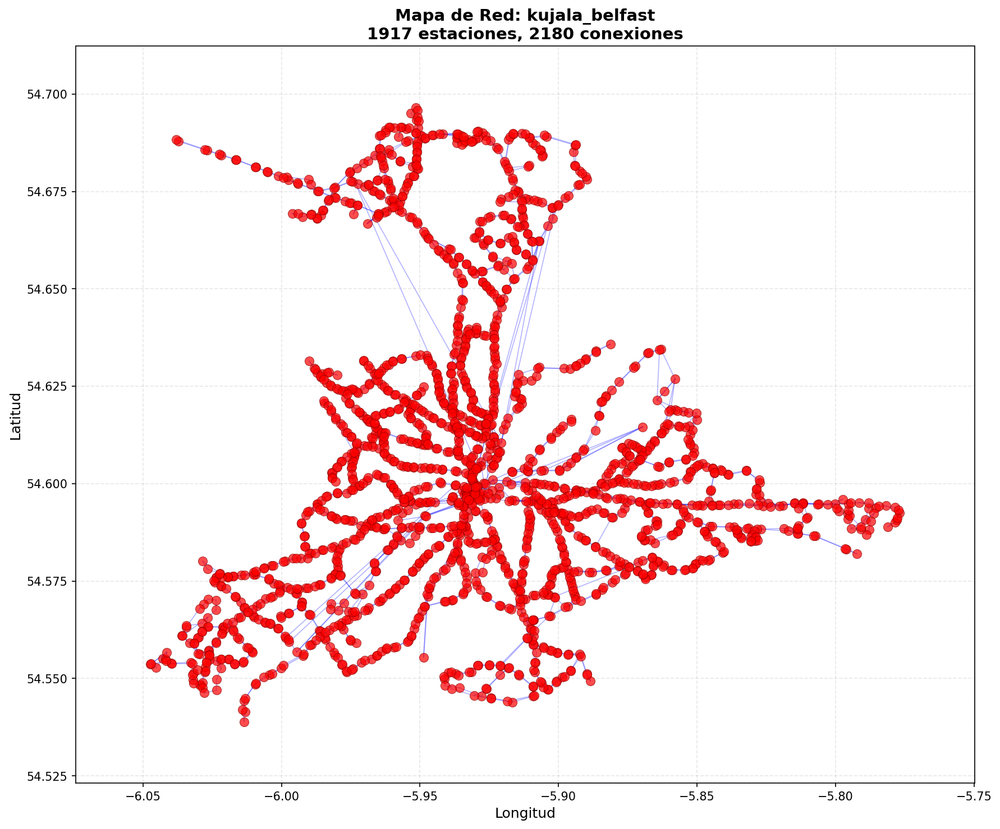

Reporte de Análisis: kujala_belfast
Mapa de la Red

Métricas Calculadas
n_nodos: 1917
n_aristas: 2180
grado_promedio: 2.2743870631194576
fraccion_gigante: 1.0
longitud_camino_promedio: 24.916670206034787
clustering_promedio: 0.009618063375288808
r_T: 0.13771517996870108
C_G: 0.00012604534747310016
robustez_grado_20pct: 0.015127803860198226
robustez_aleatorio_20pct: 0.19196661450182578